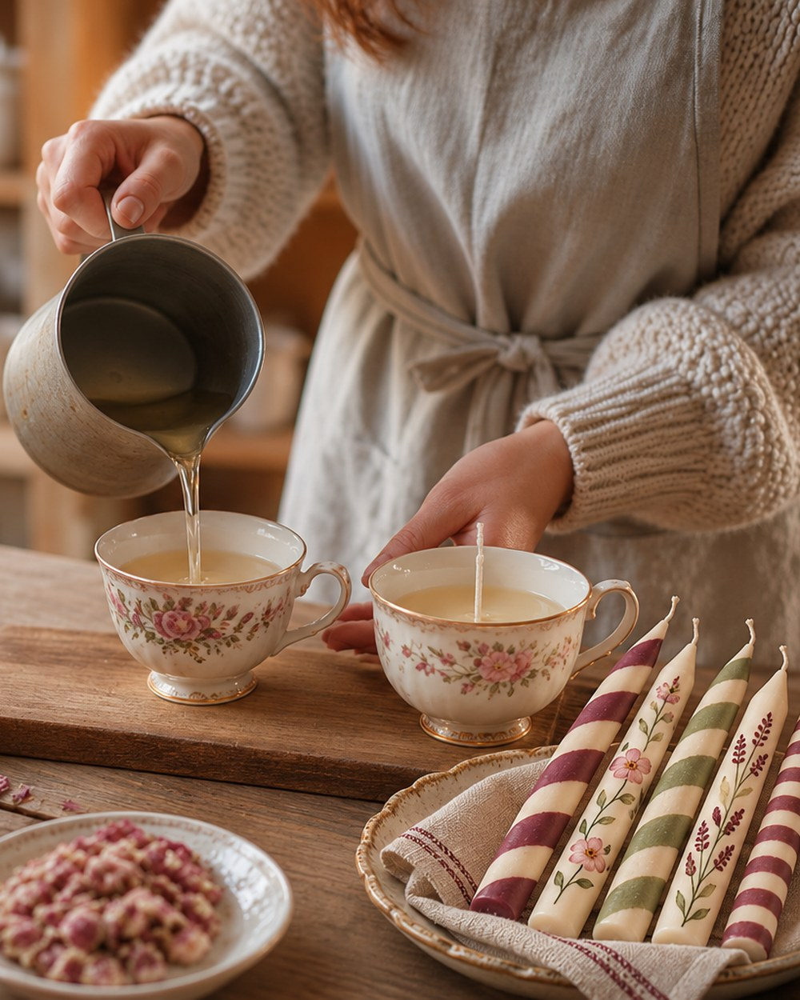

Kerzen-Workshop in Berlin
Kerzen in voller Vielfalt
Gießen, streifen, bemalen: Gestalte Duftkerzen in Vintage-Tassen und individuelle Stabkerzen – als Weihnachtsgeschenk oder kleine Freude für Dich selbst.
- Termin
- Verfügbarkeit
- Noch 3 Plätze
- Preis
- 39 €
- Ort
- Ulme 35, Berlin-Charlottenburg
- Ergebnis
- Duft- und Stabkerzen

Das erwartet Dich
Duft, Farbe und Kerzen mit Charakter.
Du gießt Duftkerzen in Vintage-Tassen und gestaltest Stabkerzen mit Streifen oder feinen handgemalten Motiven. So entsteht eine kleine Kollektion, die genauso individuell ist wie Du.
- Vintage-Tassen, Stabkerzen, Wachs und Dochte
- Düfte, Farben, Pinsel und Dekormaterial
- Persönliche Anleitung
- Snacks und infused water